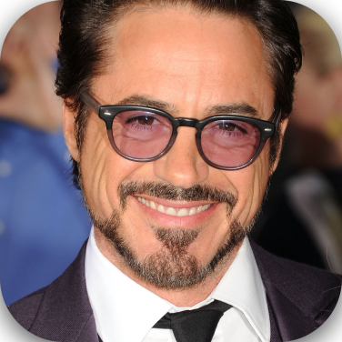
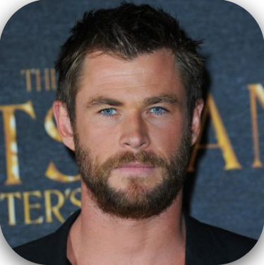
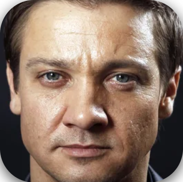

Найголовніші персонажі фільму
- Роберт Дауні-молодший(Залізна людина)
- Кріс Еванс(Капітан Америка)
- Кріс Гемсворт(Тор)
- Джеремі Реннер(Клінт Бартон)
  
 Скориставшись рукавицею з Каменями Вічности, Танос досягнув того, що вважає рівновагою Всесвіту й запорукою загального щастя. Половина живих створінь Всесвіту була знищена, що має забезпечити іншу половину достатком простору й ресурсів. Здійснивши задумане, Танос усамітнюється на віддаленій планеті. Тим часом Клінт Бартон, що перебуває під домашнім арештом тренує свою доньку у стрільбі з лука та готується до пікніку з родиною. Але вона перетворюється на попіл у результаті дій Таноса.
Скориставшись рукавицею з Каменями Вічности, Танос досягнув того, що вважає рівновагою Всесвіту й запорукою загального щастя. Половина живих створінь Всесвіту була знищена, що має забезпечити іншу половину достатком простору й ресурсів. Здійснивши задумане, Танос усамітнюється на віддаленій планеті. Тим часом Клінт Бартон, що перебуває під домашнім арештом тренує свою доньку у стрільбі з лука та готується до пікніку з родиною. Але вона перетворюється на попіл у результаті дій Таноса.
Тоні Старк і Небула опинилися на зламаному космічному кораблі без надії на допомогу. Несподівано їх знаходить Капітан Марвел і доставляє на Землю. Тоні зустрічає свою дружину живою, проте іншим не так пощастило, кожен із «Месників» когось втратив. З ними об'єднуються Чорна вдова, Брюс Беннер, Стів Роджерс, Ракета, Тор і Бойова машина. Команда відслідковує сплеск енергії, схожий на сплеск від Рукавиці Вічности. Герої знаходять понівеченого та слабкого Таноса з Рукавицею, в якій немає Каменів. Той пояснює, що знищив Камені Вічности, щоб вони не були ні для кого спокусою, тому повернути загиблих неможливо. Розлючений Тор відрубує Таносу голову.
Минає п'ять років. Команда «Месників» з іншими супергероями продовжує захищати світ. Тоні Старк ростить дочку і задоволений життям, тоді як інші намагаються не згадувати про втрати. До автомобіля Людини-мурахи (Скотта Ленґа) залазить щур та випадково вмикає пристрій, що повертає Скотта з квантового виміру. Спантеличений, він намагається з'ясувати що сталося, адже для нього минуло лише п'ять годин. Він знаходить свою дочку та вирушає до штабу «Месників». Скотт розповідає їм, що в квантовому вимірі час плине інакше і в ньому можна подорожувати в будь-якому напрямку. Тоні Старк побоюється, що коли подорож в минуле й можлива, історія зміниться і в нього не буде дочки. Та фото загиблого Людини-павука (Пітера Паркера) змушує його дослідити таку можливість. На його подив, модель подорожі у часі виявляється можливою. Тоді Стів, Наташа і Скотт просять допомоги у Брюса Беннера, який за ці п'ять років об'єднався з Галком в одному тілі.
Дізнатись більше...